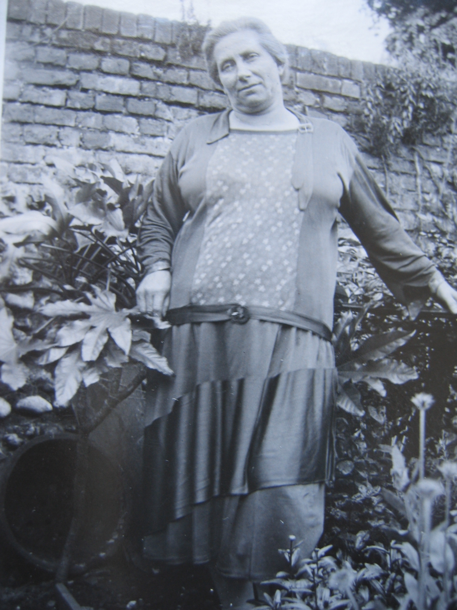
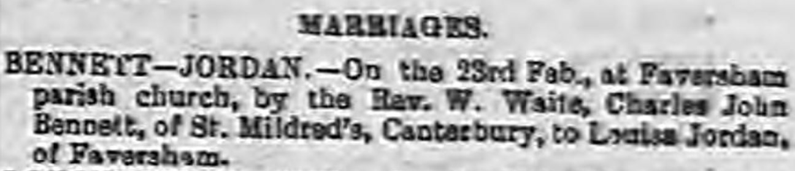
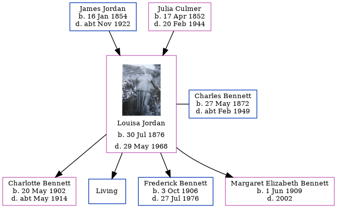

Louisa Bennett (née Jordan) 1876 - 1968
[ Home ] | [ Calendar ] | [ Surnames Index ] | [ Errors ] | [ Family History ]The child of James Jordan (a horse keeper) and Julia Culmer, Louisa Jordan, the second cousin twice-removed on the mother's side of Nigel Horne, was born in Faversham, Kent, England on 30 Jul 18761,2 and married Charles Bennett (a brewer's drayman with whom she had 4 children: Charlotte Priscilla, Charles James, Frederick Arthur and Margaret D Elizabeth, along with 1 surviving child) at St Mary Of Charity in Faversham on 23 Feb 19014.
During her life, she was living at 2 Mill Place in Faversham on 3 Apr 18815 - less than a mile from her uncle Charles Culmer who was living at 56 Tanners Street in Faversham; at Claremont Place, Canterbury, Kent, England on 31 Mar 19017 and on 2 Apr 19116; and at 4 Vicarage Street in Faversham on 29 Sept 19391 - less than a mile from her cousin on her mother's side Alfred Coombs who was living at 60 Makenade Avenue in Faversham, her first cousin once-removed on her mother's side Alfred Coombs who was living at 60 Makenade Avenue in Faversham - and her cousin on her mother's side Sidney Coombs who was living at 11 Napleton Road in Faversham -.
She died on 29 May 1968 in Sittingbourne, Kent, England3.
Parents
- James was born on 16 Jan 1854
- Julia was born on 17 Apr 1852
Children
- Charlotte Priscilla was born on 20 May 1902
- Frederick Arthur was born on 3 Oct 1906
- Margaret D Elizabeth was born on 1 Jun 1909
Citations
- 1939 Register - Findmypast (was the wife of the head of the household)
- England & Wales births 1837-2006 - Findmypast
- England & Wales deaths 1837-2007 - Findmypast
- England & Wales Marriages 1837-2005 - Findmypast
- 1881 England, Wales & Scotland Census - Findmypast (was age 4 and the daughter of the head of the household)
- 1911 Census for England & Wales - Findmypast (was age 34 and the wife of the head of the household)
- 1901 England, Wales & Scotland Census - Findmypast (was age 24 and the wife of the head of the household)
Media
Louisa Jordan

Whitstable Times and Herne Bay Herald - 9 Mar 1901

England & Wales births 1837-2006 - BMD/B/1876/3/AZ/000311/039
England & Wales marriages 1837-2005 - BMD/M/1901/1/AZ/000140/179
1939 Register - TNA-R39-1716-1716A-013-21
1911 Census for England & Wales - GBC/1911/RG14/04322/0293/2
England & Wales deaths 1837-2007 - BMD/D/1968/2/AZ/000069/068
1901 England, Wales & Scotland Census - GBC/1901/0005479879
Kent marriages and banns - GBPRS/CANT/M/94027382/2
Kent marriages and banns - GBPRS/CANT/M/94084803/2
Family Tree
Map
Generated by ged2site. Last updated on Jul 3, 2024
Known Issues
Listed in the residence for 29 Sep 1939, but spouse Charles Bennett is not
Census information missing between Census UK 1881 and Census UK 1901